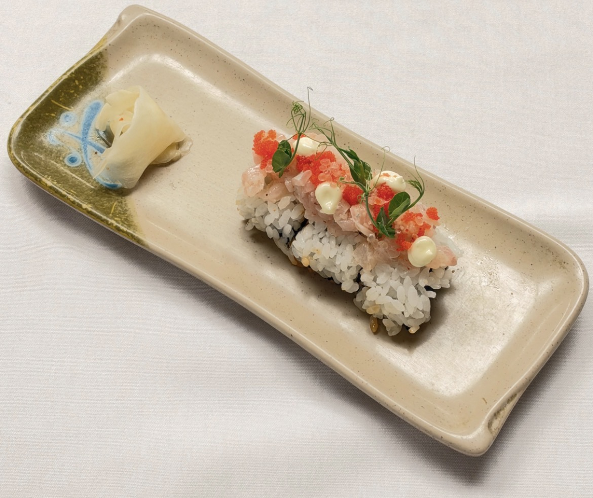
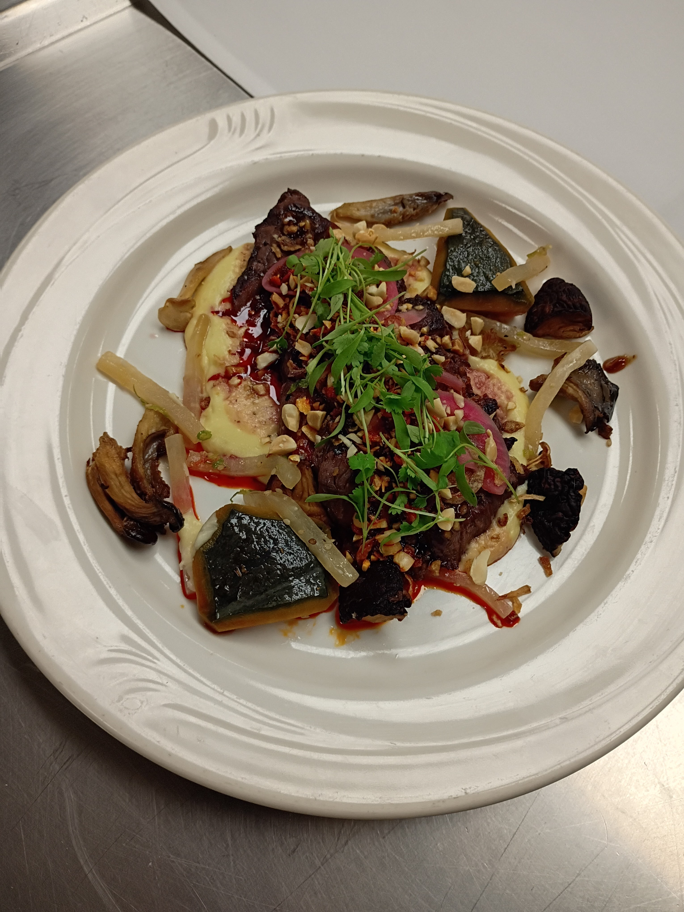
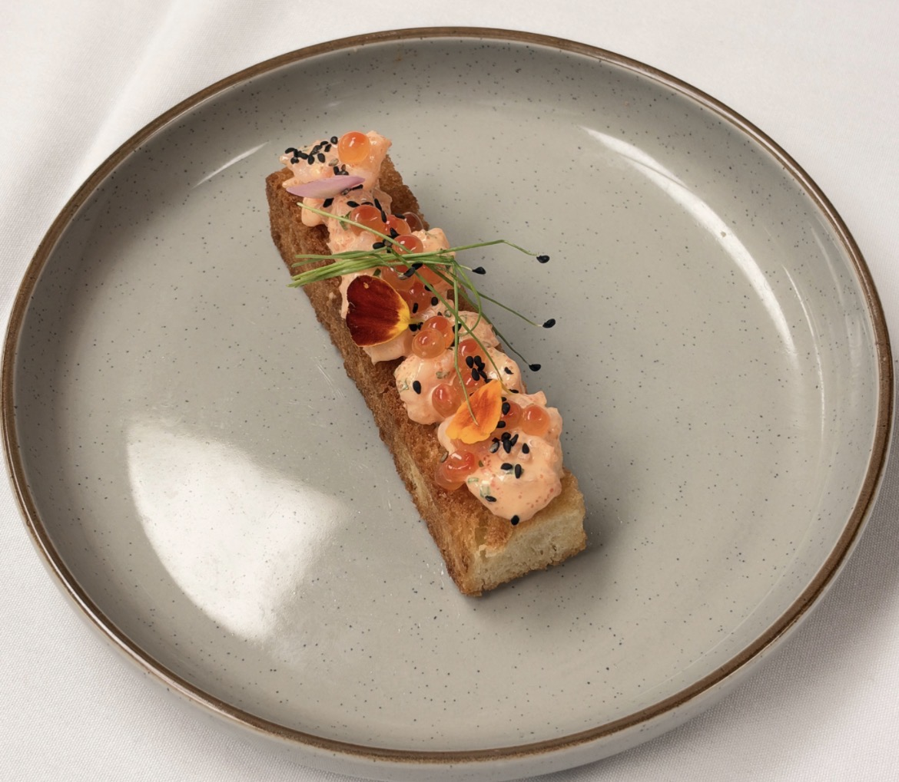
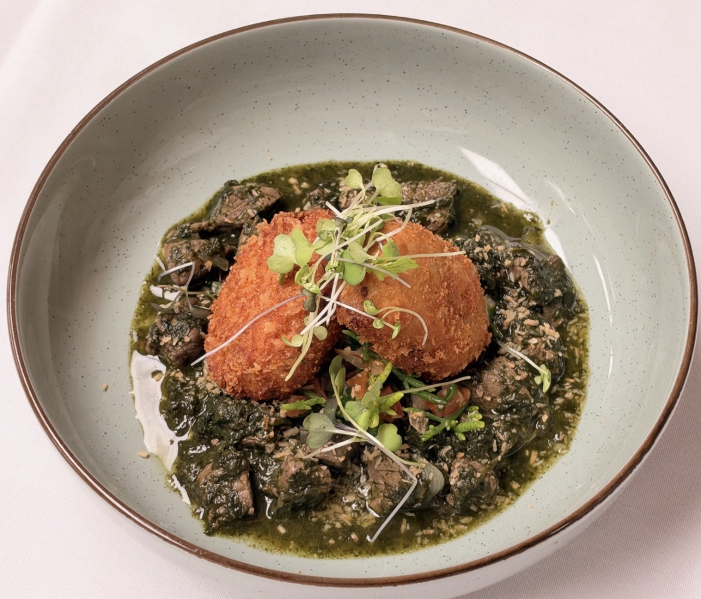

Culinary Gallery
Photos of culinary presentation and technique.
My culinary photo journal
From the classroom to the plate
These photographs capture the presentation skills, creativity, and attention to detail I have been developing through culinary education. Selected images are also referenced with the learning outcomes they help illustrate.







These images are from my culinary portfolio collection; photographs are examples of my culinary learning environment and do not independently establish who prepared each item.